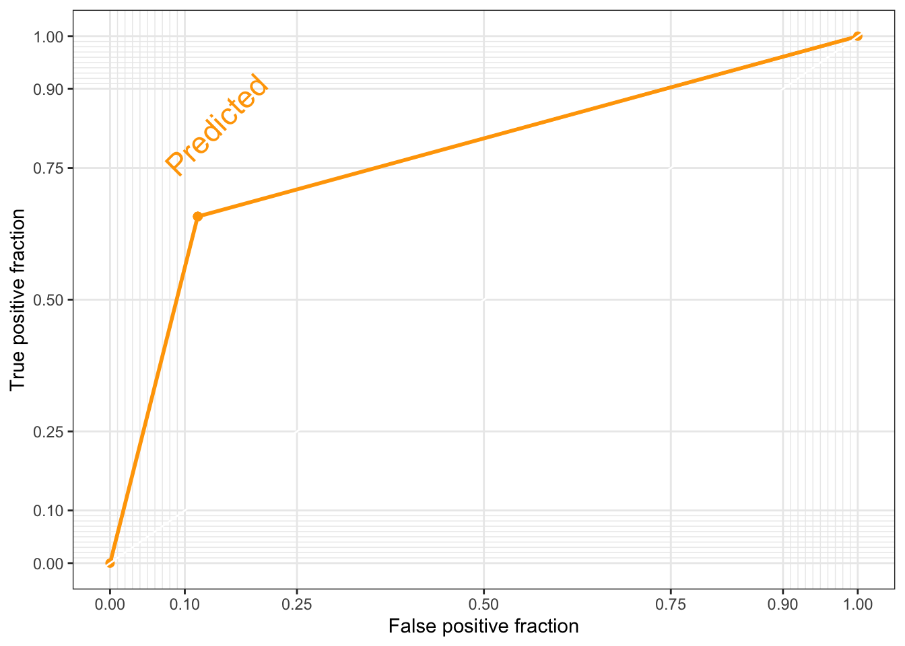

rm(list = ls()) # this line cleans your Global Environment.
#setwd("/Users/michellegonzalez/Documents/GitHub/Machine-Learning-for-Public-Policy") # set your working directory
# Do not forget to install a package with the install.packages() function if it's the first time you use it!
# install.packages(caTools, plotROC) # these guys are new for us
library(dplyr) # core package for dataframe manipulation. Usually installed and loaded with the tidyverse, but sometimes needs to be loaded in conjunction to avoid warnings.
library(tidyverse) # a large collection of packages for data manipulation and visualisation.
library(caret) # a library with key functions that streamline the process for predictive modelling
library(skimr) # a package with a set of functions to describe dataframes and more
library(plyr) # a package for data wrangling
library(caTools) # a library with several basic utility functions (e.g. ROC curves, LogitBoos classifier, etc.)
library(plotROC) # a companion to ggplot2 (loaded with the tidyverse) for plotting ROC curves
data_malawi <- read_csv("data/malawi.csv") # the file is directly read from the working directory/folder previously setClassification with Logistic Regression
This section will cover:
- Logistic regression
- Confusion matrix
- Performance metrics: Accuracy, Recall, Precision (…)
Have you heard the English proverb, “Birds of a feather flock together”? It references and old saying that indicates that people with similar characteristics tend to group and stay together. In Machine Learning, Classification problems deal with the evaluation of models of categorical response, such as:
Predictive classification: E.g. is this spam or not? Predictive classification concerns itself with unlabeled data, and groups them by the proportion of characteristics they commonly share. After which, it classifies them into some predetermined category. A common, ‘lazy’ method is kNearest Neighbors.
Binary classification: You may already be familiar with probit or logistic regression models. You obtain two types of predictions from such models: proportions, and the generation of a predicted discrete choice. For Policy purposes, we are interested in the discrete choice. E.g. filtering low-income individuals to select those who will receive social assistance and those who will not, based on some income/expenditure threshold. But, we still need the probability estimates of each of the two categories. They are relevant when working out the model’s confidence about the predicted discrete choice.
Multi-label classification: Not unlike binary classification, it is a labeled data model that relies on techniques such as multinomial logistic regression. It deals with data with more than two categories, and generates discrete choices, which policymakers then rely on to make decisions.
In the video-lecture below you’ll get an intuitive explanation of what a logistic regression model is, and how we can use it in the context of a prediction policy framework.
After watching the video, below you’ll find a continuation of our previous exercise. Previously, we were working on predicting per capita monthly expenditures of a sample of individuals from Malawi. Our assumption is that by predicting how much a person spends per month, we can infer whether they are in poverty (or not) by contrasting that value to other relevant information, such as the cost of food and rent in the country. Another way to go about this is to use the estimated poverty line, and generate a variable that takes on the value \(1\) if the person’s expenditure is below the poverty line (they are poor) and \(0\) otherwise (not poor). Thus, our policy problem becomes one of classification.
Practical Example
We will continue to work with the Malawi dataset, which can be downloaded in the (Prediction Policy Problems)[predictionpolicy.qmd] tab of this website.
1. Preliminaries: working directory, libraries, data upload
2. Data pre-processing
This section will not be a thorough step-by-step of the pre-processing and visualisation of our data because we have already done that. However, we have to do something very important: recover a static variable from the original dataset that contains a single number: the poverty line in Malawi.
Feature selection: subsetting the dataset
The variable that we’re interested in recovering is lnzline. The code below reproduces the dataframe subsetting from our previous exercise. Except, this time we will NOT delete de static vector lnzline.
# object:vector that contains the names of the variables that we want to get rid of (notice this time lnzline is still there)
cols <- c("ea", "EA", "psu","hhwght", "strataid", "case_id","eatype")
# subset of the data_malawi object:datframe
data_malawi <- data_malawi[,-which(colnames(data_malawi) %in% cols)] # the minus sign indicates deletion of cols
colnames(data_malawi) # print the names of the remaining vectors in our dataframe [1] "lnexp_pc_month" "hhsize" "hhsize2" "agehead"
[5] "agehead2" "north" "central" "rural"
[9] "nevermarried" "sharenoedu" "shareread" "nrooms"
[13] "floor_cement" "electricity" "flushtoilet" "soap"
[17] "bed" "bike" "musicplayer" "coffeetable"
[21] "iron" "dimbagarden" "goats" "dependratio"
[25] "hfem" "grassroof" "mortarpestle" "table"
[29] "clock" "region" "lnzline" At this point, we still need to do two more pre-processing steps: correctly define the vector/variable class in the dataframe, and create the binary outcome/target variable. We will repeat the class-transformation code chunk below so that you have all that is needed in one section. However, we won’t spend time explaining it in detail as that was done in the previous session.
# transform all binary/categorical data into factor class
min_count <- 3 # vector: 3 categories is our max number of categories found
# store boolean (true/false) if the number of unique values is lower or equal to the min_count vector
n_distinct2 <- apply(data_malawi, 2, function(x) length(unique(x))) <= min_count
# select the identified categorical variables and transform them into factors
data_malawi[n_distinct2] <- lapply(data_malawi[n_distinct2], factor)
# recall poverty line contains 1 unique value (it is static), let's transform the variable into numeric again
data_malawi$lnzline <- as.numeric(as.character(data_malawi$lnzline))
# you can use ``skim(data_malawi)'' to check that the dataframe is in working orderFeature creation: create a binary variable
# print summary statistics of target variable
summary(data_malawi$lnexp_pc_month) Min. 1st Qu. Median Mean 3rd Qu. Max.
4.777 6.893 7.305 7.359 7.758 11.064 # if the log of per capita expenditure is below the estimated poverty line, classify individual as poor, else classify individual as not poor. Store as factor (default with text is class character)
data_malawi$poor <- as.factor(ifelse(data_malawi$lnexp_pc_month<= data_malawi$lnzline,"Y","N")) # Y(es) N(o)
# make sure that the factor target variable has poor = Y as reference category (this step is important when running the logistic regression)
data_malawi$poor <- relevel(data_malawi$poor, ref="Y") # make Y reference category
# print a proportions table to get a first impression of the state of poverty in Malawi
prop.table(table(data_malawi$poor))
Y N
0.65 0.35 According to our sample, about 65% of Malawians are considered poor. This number is not unreasonable. According to The World Bank’s Country Report for Malawi, ca. \(70\%\) of the population lives with under \(\$2.15\) a day, and the poverty rate is estimated to be at \(50\%\). About half of their population is labelled as poor. These estimates were done with \(2019\) data (so, a bit more recent than our sample).
# Final data pre-processing: delete static variable (poverty line)
# and along with it: remove the continuous target (as it perfectly predicts the binary target)
which(colnames(data_malawi)=="lnzline") # returns column number 31[1] 31which(colnames(data_malawi)=="lnexp_pc_month") # returns column number 1[1] 1data_malawi <- data_malawi[,-c(1,31)] # delete columns no. 1 and 31 from the dataset3. Model Validation
Let’s use a simple 80:20 split of our data. We will use the caret package again.
set.seed(1234) # ensures reproducibility of our data split
# data partitioning: train and test datasets
train_idx <- createDataPartition(data_malawi$poor, p = .8, list = FALSE, times = 1)
Train_df <- data_malawi[ train_idx,]
Test_df <- data_malawi[-train_idx,]Now, let’s fit a logistic model:
# Step 1: create trainControl object
TrControl <- trainControl(
method = "cv",
number = 5,
summaryFunction = twoClassSummary,
classProbs = TRUE, # IMPORTANT!
verboseIter = FALSE
)We’re going to pass the TrControl object onto the caret model estimation to ask for the following:
- cross-validate with 5 folds
- show model summary: performance metrics for when we have two distinct classes (binary outcome), including the area under the ROC curve, the sensitivity and specificity.
- the ROC curve is based on the predicted class probabilities, so the classProbs = TRUE parameter must accompany a twoClassSummary setup.
- veboseIter = TRUE shows you the output for each iteration (but we don’t want to display all the details atm).
# Step 2: train the model.
set.seed(12345)
m <- train(
poor ~ .,
Train_df,
method = "glm",
family="binomial",
trControl = TrControl,
preProcess=c("center", "scale")
)Warning in train.default(x, y, weights = w, ...): The metric "Accuracy" was not
in the result set. ROC will be used instead.Notice the warning. If we want to report the “Accuracy” metric, we should remove the twoClassSummary parameter specification in the TrControl object.
# print the model's performance metrics
print(m) Generalized Linear Model
9025 samples
29 predictor
2 classes: 'Y', 'N'
Pre-processing: centered (30), scaled (30)
Resampling: Cross-Validated (5 fold)
Summary of sample sizes: 7219, 7220, 7220, 7221, 7220
Resampling results:
ROC Sens Spec
0.8825702 0.8943044 0.6774223Performance metrics (on the train set!)
ROC: it is a probability curve plotted with the True Positive Rate (y-axis) against the False Positive Rate (x-axis); you can think of it as plotting the tradeoff between maximising the true positive rate and minimising the false positive rate. The preferred area under the curve is \(1\). Our estimated \(0.88\) score indicates that a logistic classification is a good fit for our data (close to \(1\)).
Sensitivity: it is a measure of the proportion of the positive (\(1\) = poor) values that are correctly identified. Therefore, we have correctly identified \(89\%\) of the actual positives. The formula is: \(\frac{tp}{tp + fn}\); where tp = true positive and fn = false negative. In the video-lecture, Stephan used the term Recall, where we now use sensitivity. This means that our model does pretty well at predicting/identifying people living below the poverty line in Malawi!
Specificity: measures the proportion of actual negatives that are correctly identified by the model; i.e. the ability of our model to predict if an observation doesn’t belong to a certain category. The formula is: \(\frac{tn}{tn + fp}\); where tn = true negative and fp = false positive. At \(67\%\), we can trust a predicted negative (\(0\)) value to be real more than half the time. Our model is not as good at predicting who doesn’t live below the poverty line in Malawi.
The performance metrics we have interpreted above are based on the training dataset only. We are interested in our model’s ability to make out-of-sample predictions. Therefore, we will use the definitions above, but to take the scores on the test-dataset predictions to make our final evaluation.
Out-of-sample performance
Notice that we have used cross-validation in our training dataset. In theory, our performance metrics have been validated in 5 different folds. To a certain extent, that means that our performance metrics above did reflect the model’s ability to extrapolate. Nevertheless, we will still see how our trained model performs in our test dataset. You can think of this step as predicting on a sixth fold. We know that the performance of a logistic classification model on the train set is relatively good, is it the same for the test dataset?
# First, use the logistic classification model (trained on the Train_df) to make predictions on the test dataset:
set.seed(12345)
pr1 <- predict(m, Test_df, type = "raw")
head(pr1) # Yes and No output[1] N Y Y Y Y Y
Levels: Y NWe have specified the type of prediction we want: raw. This will return the predicted classification (\(0\) or \(1\)) as opposed to the individual’s probability of falling into the selected category \(1\) (or the estimated probability of being poor). There is a rule of thumb that says you will be categorised as poor (or any chosen category) if your estimated probability is >= to \(0.5\). With this information, we can create a Confusion Matrix which will be accompanied by performance metrics.
# Next, we call the caret package's confusionMatrix function, and select the two elements to be contrasted:
# the predicted classification vector, and the actual observed vector from the test dataframe.
confusionMatrix(pr1, Test_df[["poor"]], positive = "Y") # positive = "Y" indicates that our category of interest is Y (1)Confusion Matrix and Statistics
Reference
Prediction Y N
Y 1294 270
N 172 519
Accuracy : 0.804
95% CI : (0.787, 0.8202)
No Information Rate : 0.6501
P-Value [Acc > NIR] : < 2.2e-16
Kappa : 0.5564
Mcnemar's Test P-Value : 3.953e-06
Sensitivity : 0.8827
Specificity : 0.6578
Pos Pred Value : 0.8274
Neg Pred Value : 0.7511
Prevalence : 0.6501
Detection Rate : 0.5738
Detection Prevalence : 0.6936
Balanced Accuracy : 0.7702
'Positive' Class : Y
The first element from the above function returns the confusion matrix, a 2×2 table that shows the predicted values from the model vs. the actual values from the test dataset. You may be acquainted with this sort of table, but know it as a cross-tabulation. From the confusion matrix, we obtain the information that we need to estimate some performance metrics. If you need a reminder of what each cell in the 2x2 matrix represents, recall that the structure of our target variable is [\(Y(1),N(0)\)]. Therefore, the first cell would be the intersection of Predicted \(Y\) vs Observed \(Y\) (or True Positive) = \(1294\), the fourth cell would be the intersection of Predicted \(N\) vs Observed \(N\) (or True Negative) = \(519\). These guys are the predictions that have hit the mark! On the other hand, the second cell would be the intersection of Predicted \(Y\) vs Observed \(N\) (or False Positive) = \(270\), and the third cell Predicted \(N\) vs Observed \(Y\) (or False Negative) = \(172\). These were incorrect predictions. We use these counts (true positives, true negatives, false positives, false negatives) to estimate performance metrics
Besides the performance metrics discussed previously, this function also shows the Accuracy of our model (or \(1\) - the error rate) which, at \(0.8\), indicates that our classification algorithm is highly accurate.
Imbalanced data
When you have a large number of zeros (or No, in this case), the Accuracy metric may not be the most reliable one. If we look at the formula: number of correct predictions / total number of predictions, we see why this might be an issue. It is a lot easier to correctly predict that of which there is plenty of (Yes), than the category for which we have less instances.
Imbalance is not a problem for our target variable, as we have roughly as many zeros as ones. In fact, we have more Yes (1) responses. Nonetheless, this sets the stage for us to introduce the Kappa statistic (\(0.55\)), which is a measure of model accuracy that is adjusted by accounting for the possibility of a correct prediction by chance alone. It ranges from 0 to 1, and can be interpreted using the following thresholds:
Poor = Less than 0.20
Fair = 0.20 to 0.40
Moderate = 0.40 to 0.60
Good = 0.60 to 0.80
Very good = 0.80 to 1.00
At \(0.55\), our classification model performs moderately well. Finally, Sensitivity and Specificity scores on the test dataset are very close to the ones obtained from the train dataset. This is a good sign for the out-of-sample stability of our model.
Model Visualisation
We can visualise the performance of our classification model in various ways. For now, we’ll focus on a simple ROC AUC.
# ROC AUC: Area Under the Curve
# colAUC function from the caTools library
# transform predicted values and observed values into class numeric (needed for the colAUC function)
pr_numeric <- as.numeric(as.factor(pr1))
# sanity check:
head(cbind(pr_numeric, pr1)) # the numeric values of both vectors seem to be the same. pr_numeric pr1
[1,] 2 2
[2,] 1 1
[3,] 1 1
[4,] 1 1
[5,] 1 1
[6,] 1 1poor_numeric <- as.numeric(as.factor(Test_df$poor))
# sanity check
head(cbind(poor_numeric,Test_df$poor)) # all good poor_numeric
[1,] 1 1
[2,] 1 1
[3,] 1 1
[4,] 1 1
[5,] 1 1
[6,] 1 1# plot the ROC area under the curve
colAUC(pr_numeric, poor_numeric, plotROC = TRUE)
[,1]
1 vs. 2 0.7702343# We can also plot the ROC AUC with ggplot
# First, we create a dataframe containing the observed and the predicted values (in numeric form)
roc_df <- data.frame(Observed = poor_numeric, Predicted = pr_numeric)
# Second, we add the geom_roc() layer to a ggplot object
roc_gg <- ggplot(roc_df, aes (d = Observed, m = Predicted)) +
geom_roc(labels = FALSE, color='orange') +
style_roc(theme = theme_bw, guide = TRUE) # guide=TRUE adds a diagonal guideline, style_roc() adds minor grid lines, and optionally direct labels to ggplot objects containing a geom_roc layer
direct_label(roc_gg, nudge_y = 0.2) # direct_label tells you what the plotted line represents, nudge_y option places the label (you can play around with that number to see where different values place the label)Warning in verify_d(data$d): D not labeled 0/1, assuming 1 = 0 and 2 = 1!
Warning in verify_d(data$d): D not labeled 0/1, assuming 1 = 0 and 2 = 1!
Notice the warning on the ggplot2 ROC AUC plot. The assumption that they are making is correct, so we do not need to do anything else at this moment. You can check this by contrasting the values of the labelled vs. the numeric vectors (use the head() function).
Conclusion
How did our classification model do? Is a logistic regression the right algorithm? I trust you can form your own judgement based on the performance metrics above. Personally, I think we have improved from a linear regression, but perhaps we can do better with Ensemble Learning techniques!
Practice at home
As before, you can use the Bolivia dataset to try your hand at a logistic model. The data can be downloaded in the Practice at home section in the Prediction Policy Problems webpage of this site.
Let us know you are completing the tasks by answering a simple question via this Qualtrics link.
It is important for us to know that you are engaging with the course. Sending an answer - even if it is incorrect - to our Qualtrics question lets us know just that. So please say hi on Qualtrics! (And on our blog, too.)
Readings
Mandatory Readings
An introduction to Statistical learning Chapter 4
Athey, S., & Imbens, G. W. (2019). Machine learning methods that economists should know about. Annual Review of Economics, 11, 685-725.
McBride, L., & Nichols, A. (2018). Retooling poverty targeting using out-of-sample validation and machine learning. The World Bank Economic Review, 32(3), 531-550.pter 5.1
Optional Readings
- Bondi-Kelly et al. (2023)- Predicting micronutrient deficiency with publicly available satellite data. In AI Magazine.
Copyright © 2025 Michelle González Amador & Stephan Dietrich. All rights reserved.